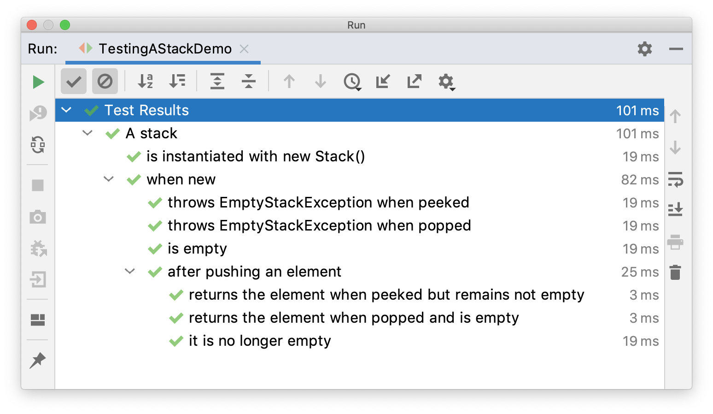

【JUnit】JUnit5的条件测试、嵌套测试、重复测试¶

条件测试¶
JUnit5支持条件注解，根据布尔值判断是否执行测试。
自定义条件¶
@EnabledIf和@DisabledIf注解用来设置自定义条件，示例：
@Test
@EnabledIf("customCondition")
void enabled() {
// ...
}
@Test
@DisabledIf("customCondition")
void disabled() {
// ...
}
boolean customCondition() {
return true;
}
其中customCondition()方法用来返回布尔值，它可以接受一个ExtensionContext类型的参数。如果定义在测试类外部，那么需要是static方法。
内置条件¶
JUnit5的org.junit.jupiter.api.condition包中内置了一些条件注解。
操作系统条件
@EnabledOnOs和DisabledOnOs，示例：
@Test
@EnabledOnOs(MAC)
void onlyOnMacOs() {
// ...
}
@TestOnMac
void testOnMac() {
// ...
}
@Test
@EnabledOnOs({ LINUX, MAC })
void onLinuxOrMac() {
// ...
}
@Test
@DisabledOnOs(WINDOWS)
void notOnWindows() {
// ...
}
@Target(ElementType.METHOD)
@Retention(RetentionPolicy.RUNTIME)
@Test
@EnabledOnOs(MAC)
@interface TestOnMac {
}
JRE条件
@EnabledOnJre和@DisabledOnJre用于指定版本，@EnabledForJreRange和@DisabledForJreRange用于指定版本范围，示例：
@Test
@EnabledOnJre(JAVA_8)
void onlyOnJava8() {
// ...
}
@Test
@EnabledOnJre({ JAVA_9, JAVA_10 })
void onJava9Or10() {
// ...
}
@Test
@EnabledForJreRange(min = JAVA_9, max = JAVA_11)
void fromJava9to11() {
// ...
}
@Test
@EnabledForJreRange(min = JAVA_9)
void fromJava9toCurrentJavaFeatureNumber() {
// ...
}
@Test
@EnabledForJreRange(max = JAVA_11)
void fromJava8To11() {
// ...
}
@Test
@DisabledOnJre(JAVA_9)
void notOnJava9() {
// ...
}
@Test
@DisabledForJreRange(min = JAVA_9, max = JAVA_11)
void notFromJava9to11() {
// ...
}
@Test
@DisabledForJreRange(min = JAVA_9)
void notFromJava9toCurrentJavaFeatureNumber() {
// ...
}
@Test
@DisabledForJreRange(max = JAVA_11)
void notFromJava8to11() {
// ...
}
JVM系统属性条件
@EnabledIfSystemProperty和@DisabledIfSystemProperty，示例：
@Test
@EnabledIfSystemProperty(named = "os.arch", matches = ".*64.*")
void onlyOn64BitArchitectures() {
// ...
}
@Test
@DisabledIfSystemProperty(named = "ci-server", matches = "true")
void notOnCiServer() {
// ...
}
环境变量条件
@EnabledIfEnvironmentVariable和@DisabledIfEnvironmentVariable，示例：
@Test
@EnabledIfEnvironmentVariable(named = "ENV", matches = "staging-server")
void onlyOnStagingServer() {
// ...
}
@Test
@DisabledIfEnvironmentVariable(named = "ENV", matches = ".*development.*")
void notOnDeveloperWorkstation() {
// ...
}
嵌套测试¶
嵌套测试可以帮助我们对测试结构进行分层。借助于Java嵌套类的语法，JUnit5可以通过@Nested注解，实现嵌套测试，示例：
import static org.junit.jupiter.api.Assertions.assertEquals;
import static org.junit.jupiter.api.Assertions.assertFalse;
import static org.junit.jupiter.api.Assertions.assertThrows;
import static org.junit.jupiter.api.Assertions.assertTrue;
import java.util.EmptyStackException;
import java.util.Stack;
import org.junit.jupiter.api.BeforeEach;
import org.junit.jupiter.api.DisplayName;
import org.junit.jupiter.api.Nested;
import org.junit.jupiter.api.Test;
@DisplayName("A stack")
class TestingAStackDemo {
Stack<Object> stack;
@Test
@DisplayName("is instantiated with new Stack()")
void isInstantiatedWithNew() {
new Stack<>();
}
@Nested
@DisplayName("when new")
class WhenNew {
@BeforeEach
void createNewStack() {
stack = new Stack<>();
}
@Test
@DisplayName("is empty")
void isEmpty() {
assertTrue(stack.isEmpty());
}
@Test
@DisplayName("throws EmptyStackException when popped")
void throwsExceptionWhenPopped() {
assertThrows(EmptyStackException.class, stack::pop);
}
@Test
@DisplayName("throws EmptyStackException when peeked")
void throwsExceptionWhenPeeked() {
assertThrows(EmptyStackException.class, stack::peek);
}
@Nested
@DisplayName("after pushing an element")
class AfterPushing {
String anElement = "an element";
@BeforeEach
void pushAnElement() {
stack.push(anElement);
}
@Test
@DisplayName("it is no longer empty")
void isNotEmpty() {
assertFalse(stack.isEmpty());
}
@Test
@DisplayName("returns the element when popped and is empty")
void returnElementWhenPopped() {
assertEquals(anElement, stack.pop());
assertTrue(stack.isEmpty());
}
@Test
@DisplayName("returns the element when peeked but remains not empty")
void returnElementWhenPeeked() {
assertEquals(anElement, stack.peek());
assertFalse(stack.isEmpty());
}
}
}
}
外部测试类通过@BeforeEach向内部测试类传递变量。
执行后结果：

重复测试¶
@RepeatedTest注解能控制测试方法的重复执行次数，示例：
import static org.junit.jupiter.api.Assertions.assertEquals;
import java.util.logging.Logger;
import org.junit.jupiter.api.BeforeEach;
import org.junit.jupiter.api.DisplayName;
import org.junit.jupiter.api.RepeatedTest;
import org.junit.jupiter.api.RepetitionInfo;
import org.junit.jupiter.api.TestInfo;
class RepeatedTestsDemo {
private Logger logger = // ...
@BeforeEach
void beforeEach(TestInfo testInfo, RepetitionInfo repetitionInfo) {
int currentRepetition = repetitionInfo.getCurrentRepetition();
int totalRepetitions = repetitionInfo.getTotalRepetitions();
String methodName = testInfo.getTestMethod().get().getName();
logger.info(String.format("About to execute repetition %d of %d for %s", //
currentRepetition, totalRepetitions, methodName));
}
@RepeatedTest(10)
void repeatedTest() {
// ...
}
@RepeatedTest(5)
void repeatedTestWithRepetitionInfo(RepetitionInfo repetitionInfo) {
assertEquals(5, repetitionInfo.getTotalRepetitions());
}
@RepeatedTest(value = 1, name = "{displayName} {currentRepetition}/{totalRepetitions}")
@DisplayName("Repeat!")
void customDisplayName(TestInfo testInfo) {
assertEquals("Repeat! 1/1", testInfo.getDisplayName());
}
@RepeatedTest(value = 1, name = RepeatedTest.LONG_DISPLAY_NAME)
@DisplayName("Details...")
void customDisplayNameWithLongPattern(TestInfo testInfo) {
assertEquals("Details... :: repetition 1 of 1", testInfo.getDisplayName());
}
@RepeatedTest(value = 5, name = "Wiederholung {currentRepetition} von {totalRepetitions}")
void repeatedTestInGerman() {
// ...
}
}
其中name可以用来自定义重复测试的显示名字，{currentRepetition}和{totalRepetitions}是当前次数和总共次数的变量。
执行结果：
├─ RepeatedTestsDemo ✔
│ ├─ repeatedTest() ✔
│ │ ├─ repetition 1 of 10 ✔
│ │ ├─ repetition 2 of 10 ✔
│ │ ├─ repetition 3 of 10 ✔
│ │ ├─ repetition 4 of 10 ✔
│ │ ├─ repetition 5 of 10 ✔
│ │ ├─ repetition 6 of 10 ✔
│ │ ├─ repetition 7 of 10 ✔
│ │ ├─ repetition 8 of 10 ✔
│ │ ├─ repetition 9 of 10 ✔
│ │ └─ repetition 10 of 10 ✔
│ ├─ repeatedTestWithRepetitionInfo(RepetitionInfo) ✔
│ │ ├─ repetition 1 of 5 ✔
│ │ ├─ repetition 2 of 5 ✔
│ │ ├─ repetition 3 of 5 ✔
│ │ ├─ repetition 4 of 5 ✔
│ │ └─ repetition 5 of 5 ✔
│ ├─ Repeat! ✔
│ │ └─ Repeat! 1/1 ✔
│ ├─ Details... ✔
│ │ └─ Details... :: repetition 1 of 1 ✔
│ └─ repeatedTestInGerman() ✔
│ ├─ Wiederholung 1 von 5 ✔
│ ├─ Wiederholung 2 von 5 ✔
│ ├─ Wiederholung 3 von 5 ✔
│ ├─ Wiederholung 4 von 5 ✔
│ └─ Wiederholung 5 von 5 ✔
小结¶
本文分别对JUnit5的条件测试、嵌套测试、重复测试进行了介绍，它们可以使得测试更加灵活和富有层次。除了这些，JUnit5还支持另一个重要且常见的测试：参数化测试。